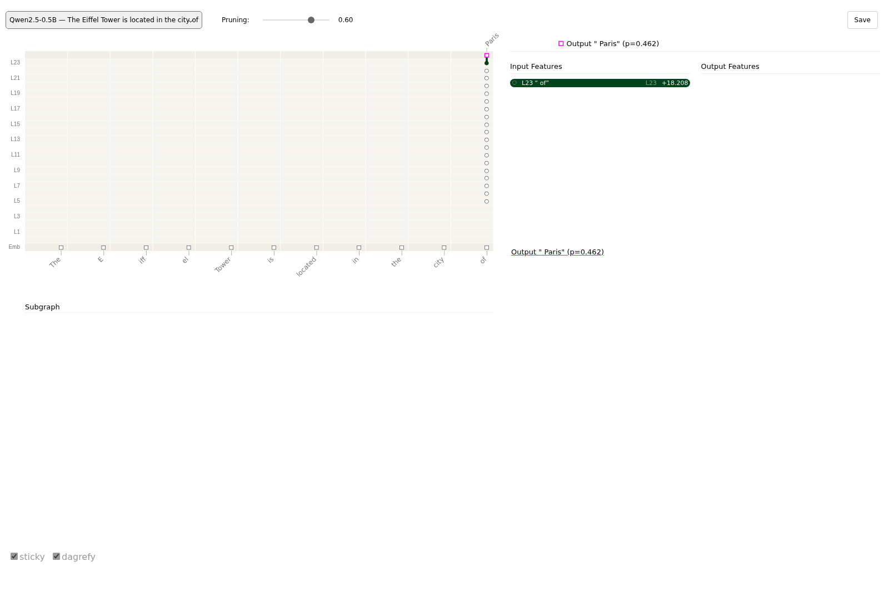

Visualization¶
Use this section to see your model's explanations and training progress as charts instead of numbers. It provides native C++ charts, dashboards, and live views built on Dear ImGui and ImPlot (immediate-mode GUI and plotting libraries), plus versioned JSON documents and standalone SVG figures that need no GUI at all.
The explainers, LRP rules, and interpretability tools elsewhere in pulsatrix return plain data
(Attribution, CircuitGraph, ActivationSnapshot) and never draw anything. This layer is
optional and sits on top of that data. pulsatrix_core never depends on it, the same way core
does not depend on the Python bindings (pulsatrix_py).
What's inside¶
Data transforms (viz/plot_data.hpp, viz/colormap.hpp). These are plain functions with
no ImGui or ImPlot code. They are always compiled into pulsatrix_core and are unit-tested:
ToFeatureImportanceBars/ToWaterfallSteps/ToWaterfallBars: turn anAttributioninto sorted bars, or into a waterfall from the baseline to the prediction.CircuitNodeDisplayLabel: a readable label for aCircuitGraphnode.ToSaliencyHeatmap/ComputeHeatmapColorScale: turn anAttributioninto a 2D grid and choose its color scale. The scale is symmetric around zero when any value is negative, and[0, max]otherwise.ToBeeswarmPoints: spread one feature's values across manyAttributions into non-overlapping points. The jitter is deterministic.ToFieldHistogramBins: bin aDatasetfield's values into an equal-width histogram.ToRgbImageBuffer: convert an imageTensorinto bytes ready for a GPU texture.ViridisColormap/DivergingColormap: colorblind-safe colormaps for unsigned and signed values.
Metrics sink (viz/implot_metrics_sink.hpp). ImPlotMetricsSink is a MetricsSink that
stores every logged scalar and histogram as a per-tag series. Its logging methods
(log_scalar(), log_histogram()) are compiled into pulsatrix_core and need no flag. Only
Draw() needs pulsatrix_viz. To write your own sink, see
Adding a new metrics sink.
Chart widgets (only with PULSATRIX_ENABLE_VIZ=ON). Each one is a thin ImGui/ImPlot
drawing call over the data transforms:
| Widget | Shows | Also draws |
|---|---|---|
AttributionBarChart |
Top features of one attribution, as bars | AttributionDocument |
AttributionWaterfallChart |
How features move the output from the baseline to the prediction | AttributionDocument |
AttributionBeeswarmView |
One feature's attribution across many inputs | — |
SaliencyHeatmapView |
An attribution as a 2D heatmap with a color scale | HeatmapDocument |
CircuitGraphView |
A CircuitGraph's per-node ablation effect |
CircuitGraphDocument |
ConfidenceMeter |
A confidence value as a labeled bar | — |
ExplanationScoreCard |
One panel: prediction, top features, confidence, and trust checks (ComputeConservation, ComputeAttributionStability) |
— |
DatasetStatisticsView |
Per-field histograms of a dataset | — |
ImageGridView |
A grid of image thumbnails with captions | — |
TrainingDashboard, ImPlotMetricsSink::Draw() |
Live training curves | a saved training_log.v1, after ReplayTrainingLog |
TokenRelevanceView |
Text with each token or word colored by its relevance, with the score on hover | TokenRelevanceDocument |
JSON documents (viz/document.hpp, in pulsatrix_core). Every view's data can be saved as
a versioned JSON file and read back, so a figure can be redrawn later, by another program or by
a renderer outside pulsatrix. See JSON documents.
SVG figures (viz/svg.hpp, in pulsatrix_core). Bar, waterfall, heatmap, token strip and
beeswarm charts as standalone SVG files, with no GPU or display. See SVG figures.
Text explanations (viz/text_relevance.hpp, in pulsatrix_core). These build token or word
relevance documents from a tokenizer's output, so the figure reads as the original text. The
pulsatrix_explain_text tool goes from a Hugging Face model and a prompt straight to a figure.
See Token relevance for text.
Infrastructure. VizWindow (viz/window.hpp) owns the window, the OpenGL context, and the
ImGui/ImPlot setup. You write a per-frame draw callback and call window.run(...).
TextureCache uploads images to the GPU once and reuses them across frames.
Full API reference: Doxygen: Visualization
Notebooks and reports (viz/mime_bundle.hpp, viz/report.hpp): rich display of pulsatrix
types in Jupyter, and reports written as .ipynb notebooks or HTML pages from C++. See
Notebooks and Reports.
JSON documents¶
Interactive viewers go stale faster than file formats do, so every view reads from a versioned
JSON document. The ImGui widgets, the SVG renderer (VIZ-2) and any tool outside pulsatrix all
read the same data. The documents are part of pulsatrix_core and need no flag.
#include <fstream>
#include <sstream>
#include "pulsatrix/viz/attribution_bar_chart.hpp" // the widget needs PULSATRIX_ENABLE_VIZ
#include "pulsatrix/viz/document.hpp"
// Save an explanation...
AttributionDocument doc = ToAttributionDocument(attribution);
std::ofstream("explanation.json") << ToJson(doc);
// ...and draw it later, possibly in another program.
std::stringstream text;
text << std::ifstream("explanation.json").rdbuf();
if (VizDocumentKind(text.str()) == "attribution") {
AttributionBarChart::Draw("Top features", ParseAttributionDocument(text.str()));
}
There are six kinds. Each has a struct, a writer (ToJson) and a reader (Parse<Kind>Document):
| Schema | Struct | Holds | Converts from and to |
|---|---|---|---|
pulsatrix.attribution.v1 |
AttributionDocument |
method, shape, row-major values, metadata |
Attribution |
pulsatrix.heatmap.v1 |
HeatmapDocument |
title, rows, cols, values, optional row_labels and col_labels |
HeatmapGrid |
pulsatrix.token_relevance.v1 |
TokenRelevanceDocument |
method, tokens, one relevance per token, target |
— |
pulsatrix.circuit_graph.v1 |
CircuitGraphDocument |
nodes (id, op_type, label, ablation_effect) and edges (from, to, weight) |
CircuitGraph |
pulsatrix.training_log.v1 |
TrainingLogDocument |
scalars (tag, steps, values) and the latest histograms per tag |
ImPlotMetricsSink; ReplayTrainingLog logs a saved run to any MetricsSink |
pulsatrix.feature_dashboard.v1 |
FeatureDashboardDocument |
One feature's source, feature_index, activation_density, max_activation, activation histogram and top_examples |
— |
pulsatrix.morris.v1 |
MorrisDocument |
target, num_trajectories, and per feature name, mu, mu_star, sigma, mu_star_conf |
MorrisResult |
pulsatrix.sobol.v1 |
SobolDocument |
target, num_samples, and per feature name, first_order, total_order and their _conf half-widths |
SobolResult |
pulsatrix.counterfactual.v1 |
CounterfactualDocument |
target, valid, output_before, output_after, and per feature its name, original and counterfactual value and distance scale |
CounterfactualResult |
pulsatrix.sensitivity.v1 |
SensitivityDocument |
target, the unchanged output, and per feature its name, value, low, high, output_low and output_high |
LocalSensitivityResult |
pulsatrix.partial_dependence.v1 |
PartialDependenceDocument |
method ("partial_dependence" or "ale"), feature, target, grid, partial_dependence, and optionally num_instances ICE curves (ice) and the instances' feature_values |
IceResult, AleResult |
pulsatrix.mutation_map.v1 |
MutationMapDocument |
title, sequence, first_position, method, alphabet, and row-major values (residues × alphabet) |
VariantScorer::single_mutant_scan |
pulsatrix.sequence_logo.v1 |
SequenceLogoDocument |
title, sequence, first_position, method, alphabet, and row-major probabilities (positions × alphabet, each row a distribution) |
ResidueLogProbs |
pulsatrix.contact_map.v1 |
ContactMapDocument |
title, sequence, first_position, method, predicted (L × L) and truth (L × L of 0, 1 and NaN, or empty) |
ContactMap |
pulsatrix.residue_tracks.v1 |
ResidueTracksDocument |
title, sequence, first_position, tracks (name, one value per residue, signed), features (name, start, end, category) and residue_ids |
— |
Token relevance for text¶
viz/text_relevance.hpp builds a token_relevance.v1 document from a real explanation, so its
pieces read as the original text:
MakeTokenRelevanceDocument(text, encoding, scores, method, target)shows each token as the text its offset covers, so byte-level BPE tokens appear decoded. Tokens that split one character (an emoji's bytes) become one piece with their scores summed. Text no token covers becomes unscored context. BOS and other inserted tokens appear as their token strings, or go tounassignedwhen left out.MakeWordRelevanceDocument(text, word_scores, method, target)takes the output ofAggregateToWords(TOK-4): each word is scored, and the spaces between words are unscored context.
The document grows three optional fields, all backward compatible, each written only when it
says something:
- granularity ("token" or "word")
- scored (one flag per piece; unscored pieces are context)
- unassigned (relevance that belongs to no piece shown)
The SVG token strip draws context as plain text, and so does the TokenRelevanceView ImGui
widget (viz/token_relevance_view.hpp).
pulsatrix_explain_text does all of this for a Hugging Face model in one step. It tokenizes,
runs AttnLRP from the most likely next token, and writes the figure or document:
pulsatrix_explain_text models/SmolLM2-135M "The Eiffel Tower is located in the city of" -o paris.svg
pulsatrix_explain_text models/SmolLM2-135M "The Eiffel Tower is located in the city of" --words -o paris.json
token_relevance_demo paris.json # the ImGui widget (PULSATRIX_ENABLE_VIZ)
For " Paris", the word view gives "Eiffel" +4.09, and every other word stays under 1.6 in magnitude ("The" is −1.60). The token view shows the relevance sits on "iffel"; "E" gets little.
The widgets read documents directly: AttributionBarChart, AttributionWaterfallChart,
SaliencyHeatmapView and CircuitGraphView each have a Draw overload for their document. For
the training dashboard, replay the log into an ImPlotMetricsSink once and draw that.
An attribution document looks like this:
{
"schema": "pulsatrix.attribution.v1",
"method": "integrated_gradients",
"shape": [2, 3],
"values": [0.5, -1.25, 0, 3, 0.1, -0.001],
"metadata": {
"baseline": "zero",
"steps": "50"
}
}
Examples of every kind are in
tests/fixtures/viz/.
Tests check that the writer reproduces each one byte for byte.
Format rules¶
- Schema and version. Every document is an object whose
"schema"ispulsatrix.<kind>.v<N>.VizDocumentKind()returns the kind, so a viewer can pick the reader. A reader accepts only its own major version. - Compatibility within a version. Version 1 only ever gains fields, and readers ignore fields they don't know, so an older reader can read a newer v1 file. Removing, renaming or changing the meaning of a field means v2.
-
NaN and infinity. JSON has no literal for them. A non-finite number is written as
null, and the top-level"nonfinite"object maps its JSON Pointer to"nan","inf"or"-inf":"values": [1, null], "nonfinite": { "/values/1": "nan" }The member appears only when the document has a non-finite number. A reader rejects a
nullnumber with no entry, and an entry that doesn't point at anullnumber, so no value is ever silently lost. - Numbers round-trip exactly. Each number is written with the shortest text that reads back as the samefloat(ordouble, for training-log values), formatted the way JavaScript prints numbers. Reading the file gives back the same bits. - Deterministic output. The same document always gives the same bytes on every platform: fixed member order, metadata sorted by key, two-space indent, and number arrays on one line. - Strict reading. The parser follows RFC 8259 strictly. It rejects comments, trailing commas, duplicate keys, invalid UTF-8 and nesting deeper than 256 levels. Every reader error names the JSON Pointer of the problem, for examplepulsatrix.heatmap.v1 document: /row_labels: needs one label per row, or none. - Text is UTF-8. Token strings must be valid UTF-8, so decode byte-level BPE tokens before writing them.
The parser is fuzzed (tools/fuzz/viz_document_fuzz.cpp). pulsatrix/json.hpp exposes the
underlying JsonValue, ParseJson and WriteJson for other uses.
SVG figures¶
For papers, reports and CI, viz/svg.hpp draws documents as standalone SVG files. It needs no
GPU, display, font library or ImGui, and it is part of pulsatrix_core. Colors come from
colormap.hpp, the same as the ImGui widgets: blue-white-red for signed values and Viridis for
magnitudes.
| Function | Draws | From |
|---|---|---|
RenderBarChartSvg(doc, top_k) |
The top features by |attribution|, on an axis through zero | AttributionDocument |
RenderWaterfallSvg(doc, baseline) |
Each feature moving the output from the baseline to the prediction | AttributionDocument |
RenderHeatmapSvg(doc) |
The grid, with a color bar and any row and column labels | HeatmapDocument |
RenderTokenStripSvg(doc) |
The text's tokens, wrapped, each on a background colored by its relevance | TokenRelevanceDocument |
RenderBeeswarmSvg(docs, features) |
One row per feature, one point per input | several AttributionDocuments |
RenderCounterfactualSetSvg(docs) |
Several counterfactuals of one input side by side: a column each, a row per changed feature, cells colored by the change | several CounterfactualDocuments |
RenderMorrisSvg(doc) |
μ against σ on one scale, a point per feature with μ's interval, and the line σ = μ* | MorrisDocument |
RenderSobolSvg(doc, top_k) |
First- and total-order indices per feature, largest total first, with confidence whiskers | SobolDocument |
RenderCounterfactualSvg(doc, max_rows) |
Whether the target is reached, then each changed feature, costliest first, with its old and new value and its change in units of its scale | CounterfactualDocument |
RenderTornadoSvg(doc, top_k) |
One row per feature, largest swing first: bars from the unchanged output to the output at the feature's low and high values | SensitivityDocument |
RenderPartialDependenceSvg(doc, view) |
ICE curves under their average, raw, centered or as slopes, with a rug of the inputs' values | PartialDependenceDocument |
RenderMutationMapSvg(doc) |
Every substitution's score, a row per amino acid and a column per residue, the wild type dotted; long sequences wrap | MutationMapDocument (protein views, viz/protein_views.hpp) |
RenderSequenceLogoSvg(doc) |
A sequence logo: letters stacked to each position's information content | SequenceLogoDocument |
RenderContactMapSvg(doc) |
Predicted contacts above the diagonal; the structure's contacts and the top L predictions, right or wrong, below | ContactMapDocument |
RenderResidueTracksSvg(doc) |
Per-residue tracks and annotated features under the sequence | ResidueTracksDocument |
#include <fstream>
#include "pulsatrix/viz/svg.hpp"
SvgOptions options;
options.title = "Why the model said yes";
std::ofstream("bars.svg") << RenderBarChartSvg(ToAttributionDocument(attribution), 10, options);


SvgOptions sets the width (default 640 pixels), a title and the font size. The height follows
from the content. Every figure has a title element for screen readers, and every bar, cell and
token has a tooltip with its exact value.
From the command line. The pulsatrix_svg tool, built and installed with the library,
turns documents into figures:
pulsatrix_svg explanation.json -o bars.svg # attribution: bar chart
pulsatrix_svg explanation.json --waterfall 0.12 -o wf.svg # attribution: waterfall
pulsatrix_svg run*.json --beeswarm 0,3,7 -o swarm.svg # many attributions: beeswarm
pulsatrix_svg saliency.json -o map.svg # heatmap
pulsatrix_svg tokens.json -o text.svg # token relevance
pulsatrix_svg pd.json --ice centered -o ice.svg # partial dependence, centered ICE
pulsatrix_svg sens.json --top-k 8 -o tornado.svg # sensitivity: tornado chart
pulsatrix_svg cf.json -o cf.svg # counterfactual: what changed
pulsatrix_svg cf1.json cf2.json cf3.json -o set.svg # several counterfactuals side by side
pulsatrix_svg morris.json -o morris.svg # Morris screening scatter
pulsatrix_svg sobol.json -o sobol.svg # Sobol index bars
Other options: --top-k N, --width W, --font-size N, --title TEXT.
Details:
- Deterministic. The same input gives the same bytes on every platform. Tests compare each chart with a stored file.
- Large heatmaps. Grids up to 4,096 cells are one vector rectangle per cell. Larger grids, such as a 224 x 224 saliency map, are embedded as a lossless PNG with sharp pixel edges, which keeps the file small (about 45 KB for 224 x 224).
- Non-finite values. A heatmap cell or token whose value is NaN or infinite is drawn gray and left out of the color scale. The bar, waterfall and beeswarm charts refuse non-finite values, because there's no honest bar length for them.
- Text widths are estimated at 0.6 em per character, since there is no font library. Token strips use a monospace font, so their widths are exact. Long labels are shortened with an ellipsis. For exact layout of any script, use the HTML token view.
Interactive HTML¶
viz/html.hpp writes the same views as self-contained HTML pages, drawn in the browser by
Vega-Lite. Hover any bar, point or cell to see its exact
value. Zoom continuous charts with the mouse wheel and pan by dragging. Save a PNG or SVG from
the … menu. Pages open in any browser and display in a Jupyter cell (IPython.display.HTML).
There are two views the SVG doesn't have: the training log, with one zoomable chart per scalar
and a histogram per weight tag, and the feature dashboard, with statistics, the activation
histogram and top examples.
| Function | Draws |
|---|---|
RenderBarChartHtml, RenderWaterfallHtml, RenderHeatmapHtml, RenderBeeswarmHtml |
The attribution and heatmap views, as above |
RenderPartialDependenceHtml, RenderTornadoHtml, RenderCounterfactualHtml, RenderCounterfactualSetHtml, RenderMorrisHtml, RenderSobolHtml |
The CFS views, as above |
RenderTrainingLogHtml(doc) |
A line chart per scalar tag and a histogram per histogram tag (HTML only) |
RenderFeatureDashboardHtml(doc) |
A feature's statistics, activation histogram and top examples (HTML only) |
RenderTokenRelevanceHtml(doc) |
The text, each piece on a background colored by its relevance |
Each chart is also available as a bare Vega-Lite spec (ToVegaLiteBarChart, ToVegaLiteHeatmap,
and so on) that you can embed in your own page, or wrap with VegaLitePage(spec, heading).
#include <fstream>
#include "pulsatrix/viz/html.hpp"
HtmlOptions options; // width, title, and where the scripts come from
std::ofstream("bars.html") << RenderBarChartHtml(ToAttributionDocument(attribution), 10, options);
Where the JavaScript comes from. By default a page loads Vega, Vega-Lite and vega-embed (BSD-3-Clause) from the jsDelivr CDN. The versions are pinned, and Subresource Integrity hashes make the browser refuse any changed file. The page is a few kilobytes, but viewing it needs a network connection. For a page that works offline, or that you can mail as one file, copy the scripts in (about 830 KB more):
tools/render/fetch_vega.sh ~/vega # downloads and checks the three files once
pulsatrix_svg x.json -o x.html --inline-js ~/vega # or set PULSATRIX_VEGA_DIR=~/vega
In C++, set options.scripts = HtmlScripts::Inline and options.script_dir. --offline finds
the scripts in $PULSATRIX_VEGA_DIR, a vega/ directory next to pulsatrix_svg, or
share/pulsatrix/vega beside its bin/.
From the command line. pulsatrix_svg writes HTML when the output ends in .html (or with
--html), and takes the same options as for SVG:
pulsatrix_svg explanation.json -o bars.html # hover, zoom, export
pulsatrix_svg pd.json --ice centered -o ice.html
pulsatrix_svg run.json -o run.html # training log
pulsatrix_svg feature.json -o feature.html # feature dashboard
pulsatrix_explain_text MODEL_DIR "some text" -o why.html # token relevance, straight from a model
Text in every language. The token relevance page is plain HTML with no scripts. The browser lays out the text, so right-to-left scripts, joined Arabic letters, Indic conjuncts and emoji sequences all display correctly, and long text wraps to the window. Hover a piece to see its score.
Safety. Labels are escaped: a feature called </script> stays text. The chart's data is
embedded as JSON, not as code.
Notebooks: rich display¶
A MIME bundle is one output in several formats (an interactive chart, an SVG image, plain
text), so that each front end shows the best one it supports. mime_bundle_repr()
(viz/mime_bundle.hpp) makes one for each pulsatrix type below. Report files (next section) are
built from them, and a C++ notebook kernel can display them.
#include "pulsatrix/viz/mime_bundle.hpp"
using namespace pulsatrix;
MimeBundle b = mime_bundle_repr(attribution);
// b.entries: {"application/vnd.vegalite.v5+json", spec}, {"image/svg+xml", svg}, {"text/plain", text}
| Value | Shown as |
|---|---|
Tensor |
A summary as text and an HTML table: shape, device, min, max, mean, standard deviation, non-finite count and the leading values |
Attribution |
Rank 3 or more: a heatmap of the first example, channels summed. Up to 64 × 64 cells it is Vega-Lite plus SVG; larger maps are a PNG, one pixel per cell. Rank 1 or 2: a bar chart of the first example's largest features |
CircuitGraph, CircuitGraphDocument |
A Vega-Lite node-link view: columns by depth, nodes colored by ablation effect, edges as thick as their weight |
| Documents with a chart (attribution, heatmap, partial dependence, sensitivity, counterfactual, Morris, Sobol) | Vega-Lite and the SVG figure |
TrainingLogDocument |
Vega-Lite |
TokenRelevanceDocument, the protein views |
The SVG figure |
- Attribution shapes. The first dimension is the batch: rank 3 is read as (N, H, W) and rank 4 as (N, C, H, W). Give a single image's attribution a batch dimension of 1 before displaying it, or a (3, H, W) map is drawn as three examples.
- Formats. Every bundle ends in
text/plain, and its richest format comes first. The charts are Vega-Lite specifications sent as version 5 (application/vnd.vegalite.v5+json), which JupyterLab, Notebook 7 and VS Code draw without anything installed. They are checked against Vega-Lite 5's schema. The SVG is the fallback where Vega doesn't run, such as GitHub's notebook preview. Circuit graphs and training logs have no SVG, so GitHub shows only their text. The HTML uses inline styles only, so nothing leaks into the rest of the notebook. - Other front ends.
MimeBundle::to_json_value()returns the bundle as one JSON object,{"text/plain": ..., ...}.
C++ notebooks are experimental
xeus-cpp is a Jupyter kernel that runs C++
cells through Clang's interpreter (conda install -c conda-forge xeus-cpp). Its
xcpp::display(x) finds pulsatrix's mime_bundle_repr automatically, and pulsatrix doesn't
depend on xeus. The tests check that lookup with a copy of xeus-cpp 0.10's display code, but
pulsatrix hasn't been run inside a live kernel yet: loading the library into one is a planned
roadmap item. Until then, write notebooks with Report below.
// in a xeus-cpp cell, once the library is loaded
#include "pulsatrix/viz/mime_bundle.hpp"
xcpp::display(lrp.explain(ctx, x, target, &backend)); // a heatmap
Reports: notebooks and HTML pages¶
Report (viz/report.hpp) writes results as a Jupyter notebook (an .ipynb file, nbformat 4.5)
or as one HTML page, from C++, with no Python and no kernel:
#include "pulsatrix/viz/report.hpp"
using namespace pulsatrix;
Attribution a = LRP::epsilon_plus().explain(ctx, x, target, &backend); // compute as usual
Report report("LRP on ResNet18");
report.markdown("We explain the top class with **EpsilonPlus**.")
.code("Attribution a = LRP::epsilon_plus().explain(ctx, x, target, &backend);") // shown, not run
.show(a); // anything with a mime_bundle_repr(): here, the heatmap
report.text("top class: 24 (great grey owl)");
report.save_ipynb("resnet18.ipynb");
report.save_html("resnet18.html");
- Cells. The title becomes a heading at the top.
markdown()adds a markdown cell andcode()a code cell. The code is only shown: you compute the values yourself, as above.show()andoutput()add rich outputs (the bundles above), andtext()adds plain text. Outputs attach to the code cell before them; one with no code cell before it gets its own cell, with the empty input hidden. - Opening the notebook. It keeps its outputs, so it shows as it is on GitHub, in VS Code,
JupyterLab and Quarto. Its kernel is set to xeus-cpp's C++17 kernel; JupyterLab without that
kernel asks for one, and choosing "No Kernel" still shows every output. The same report always
writes the same bytes, and CI checks a sample one with
nbformat.validate. - Opening the HTML page. Any browser. Each output shows in its richest format: charts, then SVG, PNG, HTML and text. Charts need the Vega libraries, which the page loads from a CDN by default (small, but needs a network connection) or contains itself (about 830 KB more, works offline and as an email attachment):
HtmlOptions options;
options.scripts = HtmlScripts::Inline;
options.script_dir = "vega"; // tools/render/fetch_vega.sh downloads the three files
report.save_html("resnet18.html", options);
Report uses only these two options. A report without charts has no scripts at all.
- Markdown in the HTML page covers headings, paragraphs, lists, fenced code, pipe tables, bold,
italic, code spans and links. Raw HTML in the markdown is escaped, and links go only to http,
https, mailto or relative URLs, so text from elsewhere can't add scripts to the page. The
notebook keeps the markdown as written, for Jupyter to render in full.
Attribution graphs (Neuronpedia and circuit-tracer)¶
An attribution graph shows how a prediction is built up through the layers of a network. pulsatrix writes graphs in the JSON format that Neuronpedia's graph viewer and Anthropic's circuit-tracer read, so a large graph gets a mature, interactive viewer with no extra code. The viewer lets you click a node to see what feeds it and what it feeds, prune weak nodes with a slider, and pin nodes into a subgraph.
From a language model. pulsatrix_explain_text --graph explains the next-token prediction
with AttnLRP, the same as the token view, and records the relevance at every layer:
pulsatrix_explain_text MODEL_DIR "The Eiffel Tower is located in the city of" \
--graph eiffel.json --viewer-dir graphs/

- Nodes.
- One per token at the bottom (the embeddings).
- One per token for the residual stream after each layer.
- The predicted token at the top, with its probability.
A node's activation is its relevance for the prediction.
- Links. A link from token i in one layer to token j in the next is the share of j's
relevance that the layer passes back to i. Links between different tokens are attention
moving information; a token's own vertical path is its residual stream. The links leaving a
node add up to that node's relevance, and the bottom row matches the token view exactly.
- Pruning. By default the file keeps the fewest links holding 98% of the relevance
(--edge-threshold). Each node's influence lets the viewer's slider hide the least relevant
nodes.
- Cost. One block pass per layer and token: about 5 seconds for an 11-token prompt on
Qwen2.5-0.5B on a CPU. Prompts longer than 256 tokens are refused.
- What the nodes are not. Nodes are residual-stream positions, not interpretable features;
this graph shows where the information flows. For a graph whose nodes are transcoder features,
add --transcoders DIR (Attribution graphs).
In C++, BuildRelevanceGraph(model, backend, ids, target, options) (relevance_graph.hpp)
returns the graph, and ToNeuronpediaJson (viz/attribution_graph.hpp) writes it.
From a circuit graph. The ablation-scored circuit_graph.v1 documents export too. The input
is in one column and the operations, in order, are in the next:
pulsatrix_svg circuit.json --neuronpedia --slug my-mlp --scan my-model -o my-mlp.json
Viewing a graph.
- Locally, with circuit-tracer.
--viewer-dir DIRwrites the graph's entry intoDIR/graph-metadata.json, the index circuit-tracer's local viewer reads. Put the graph files in the same directory and start its server there (circuit-tracer start-server --graph_file_dir DIR). Openhttp://127.0.0.1:8041/index.html?slug=SLUG. Use127.0.0.1rather thanlocalhost, because onlocalhostthe viewer loads Anthropic's hosted example graphs instead. - On Neuronpedia. Upload the file at
neuronpedia.org/graph/validator. Neuronpedia
uses
scanas its model id.
Every file is written against Neuronpedia's graph-schema.json. Before writing,
ToNeuronpediaJson checks that node ids are unique, that links name real nodes, that numbers
are finite, and that the output node's label carries its probability, which the viewer reads.
ParseNeuronpediaGraph reads graphs that circuit-tracer or Neuronpedia wrote.
Building with visualization enabled¶
Prerequisites¶
The default build has no GUI dependencies. -DPULSATRIX_ENABLE_VIZ=ON adds these:
- Network access at configure time. CMake downloads GLFW 3.4, Dear ImGui v1.92.5, and
ImPlot v0.17 with
FetchContent. - OpenGL development files. CMake runs
find_package(OpenGL REQUIRED). On Debian/Ubuntu, installlibgl1-mesa-dev. - GLFW's build dependencies on Linux. GLFW 3.4 builds X11 and Wayland support by default.
On Debian/Ubuntu, install
libx11-dev libxrandr-dev libxinerama-dev libxcursor-dev libxi-devfor X11, andlibwayland-dev libxkbcommon-dev wayland-protocolsfor Wayland. To skip Wayland, add-DGLFW_BUILD_WAYLAND=OFF. - A display and a GPU driver to run anything that links
pulsatrix_viz. That is why the option defaults toOFFand CI builds without it. - Optional: FreeType and fontconfig, for text in every language (see
Fonts and languages). On Debian/Ubuntu, install
libfreetype-dev libfontconfig1-dev. CMake uses them when it finds them. Without them the windows still work, using stb_truetype and a list of common font files.
Fonts and languages¶
The windows show text in any language your system has fonts for: Chinese, Japanese, Korean,
Cyrillic, Greek, Arabic, Hebrew, Indic scripts, Thai, Georgian, Armenian, Ethiopic, math symbols,
emoji and more. A VizWindow starts from Dear ImGui's default font and merges system fonts in
behind it, so the default look doesn't change. A fallback font is used only for characters the
fonts before it lack, and each glyph is drawn the first time it's needed.
How the fonts are found:
- Linux with fontconfig: about forty sample characters, one per script plus symbols, math and emoji, are each matched to the best installed font. That's typically 20 to 30 fonts, and it adds about 0.1 s and 30 MB at startup.
- Windows and macOS: the fonts that ship with the system (Segoe UI, Microsoft YaHei, Nirmala UI, Segoe UI Emoji, ...; Helvetica, PingFang, Arial Unicode, ...).
- Linux without fontconfig: common Noto and DejaVu files in the usual font directories.
To choose fonts yourself, set PULSATRIX_VIZ_FONTS to font files, separated by : (; on
Windows). They come first, before the system fonts. Set it to none to use only ImGui's default
font. In code, pass a VizFontOptions to the VizWindow constructor:
VizFontOptions fonts;
fonts.fonts = {{"/path/to/MyFont.ttf"}}; // first in line, before the system fonts
fonts.size = 18.0f; // pixels; ImGui's default is 13
VizWindow window("my app", 1280, 800, fonts);
Emoji. Emoji are drawn in color with a vector color font, such as Segoe UI Emoji (Windows)
or Twemoji, when FreeType is available. Bitmap emoji fonts can't be scaled, so they are skipped.
That covers Noto Color Emoji (the usual one on Linux) and Apple Color Emoji. On Linux, install
a vector emoji font for color (for example Twemoji, from mozilla/twemoji-colr) and point
PULSATRIX_VIZ_FONTS at it. Without one, emoji fall back to black-and-white glyphs where a text
font has them.
Scripts that need text shaping. Dear ImGui places characters one after another. It can't join
Arabic letters, lay out right-to-left text, or reorder and combine the vowel signs and conjuncts
of Indic scripts, and a ligature such as an emoji with a skin tone shows as two glyphs. For these
scripts every character appears, but not as a reader would write them. The SVG figures don't have
this limit: the browser or SVG viewer shapes the text. TokenRelevanceView is fine for reading
scores, and the SVG strip (pulsatrix_explain_text ... -o out.svg) shows the text itself
correctly.
Build¶
cmake -S . -B build -DPULSATRIX_ENABLE_VIZ=ON
cmake --build build --target training_dashboard_demo --config Release
Link your own executable against pulsatrix_viz. It brings in pulsatrix_core, imgui, and
implot, including their include directories:
add_executable(my_viz_app my_viz_app.cpp)
target_link_libraries(my_viz_app PRIVATE pulsatrix_viz)
pulsatrix_viz isn't installed, so use it from a source tree (add_subdirectory). An installed
find_package(pulsatrix) gives you pulsatrix::core, which includes the JSON documents and the
SVG renderer.
The data transforms, ImPlotMetricsSink's logging methods, the JSON documents and the SVG
renderer need no flag. They are always
part of pulsatrix_core.
Demo apps¶
| Target | What it shows |
|---|---|
training_dashboard_demo |
Live loss curves while an XOR network trains |
explanation_dashboard_demo |
Bar chart, waterfall, saliency heatmap, circuit graph, and score card for a small XOR network |
dataset_preview_demo |
DatasetStatisticsView and ImageGridView on small synthetic datasets |
live_inference_demo |
An ExplanationScoreCard that updates as it cycles through XOR inputs |
token_relevance_demo |
TokenRelevanceView on token relevance documents, for example from pulsatrix_explain_text |
mnist_viz_gallery |
Every widget on MNIST digits (see below) |
How to implement¶
A live training dashboard¶
#include <imgui.h>
#include "pulsatrix/adam_optimizer.hpp"
#include "pulsatrix/cpu_backend.hpp"
#include "pulsatrix/viz/training_dashboard.hpp"
#include "pulsatrix/viz/window.hpp"
#include "pulsatrix/xor_training_example.hpp"
using namespace pulsatrix;
CPUBackend backend;
XorNetwork net(&backend);
AdamOptimizer optimizer(0.05f, &backend);
ImPlotMetricsSink sink; // a MetricsSink that buffers logged values for plotting
// The four XOR examples, as (1, 2) inputs and (1, 1) targets.
const float xs[4][2] = {{0, 0}, {0, 1}, {1, 0}, {1, 1}};
const float ys[4] = {0, 1, 1, 0};
int step = 0;
VizWindow window("Training Dashboard", 1000, 700);
window.run([&]() {
for (int i = 0; i < 4 && step < 4000; ++i, ++step) { // a few training steps per frame
Tensor input(Shape({1, 2}), &backend, {xs[step % 4][0], xs[step % 4][1]});
Tensor target(Shape({1, 1}), &backend, {ys[step % 4]});
net.train_step(input, target, optimizer, sink, step); // logs the loss to sink
}
ImGui::Begin("Training Dashboard");
TrainingDashboard::Draw(sink);
ImGui::End();
});
Full source: examples/viz/training_dashboard_demo.cpp.
What's happening: XorNetwork::train_step() and MnistConvNet::train_step() take a
MetricsSink&. Passing an ImPlotMetricsSink adds plotting with no change to the training
code. Each frame, TrainingDashboard::Draw() reads the sink's per-tag series. It draws a
one-line summary per tag (last, min, max, current step) and a small line chart for each tag.
Logging and drawing are separate methods. The logging half works, and is unit-tested, even
with PULSATRIX_ENABLE_VIZ=OFF. Only Draw() needs the GUI stack.
Recipe: Training dashboard.
MNIST gallery¶
mnist_viz_gallery runs every widget on this page against MNIST test digits:
python3 tools/fetch_mnist.py # once: data/MNIST/raw/ (gitignored)
cmake -S . -B build-viz -DPULSATRIX_ENABLE_VIZ=ON -DCMAKE_BUILD_TYPE=Release
cmake --build build-viz --target mnist_viz_gallery -j
./build-viz/mnist_viz_gallery # interactive
./build-viz/mnist_viz_gallery --screenshot out/ # one PNG per page, then exit
Run it from the repository root, or pass --data DIR (default data/MNIST/raw).
| Option | Meaning | Default |
|---|---|---|
--epochs N |
Training epochs | 1 |
--train N |
Training digits (about 25 s per epoch on one CPU core at the default) | 60000 |
--images N |
Test digits explained with every method. If none is misclassified, the first misclassified test digit is added. | 4 |
--eval N |
Held-out digits for the accuracy curve | 2000 |
--beeswarm N |
Digits behind each beeswarm | 200 |
--screenshot DIR |
Save one PNG per page to DIR, then exit |
off |
| Page | Widgets | What it shows |
|---|---|---|
| Training | ImPlotMetricsSink, TrainingDashboard |
MnistConvNet (Conv2D(1,8,5x5) -> ReLU -> Flatten -> Linear) training live: 100-step mean loss, held-out accuracy, final conv-kernel and classifier-weight histograms |
| Dataset | DatasetStatisticsView, ImageGridView, TextureCache |
Pixel and label histograms of the first 1000 test digits; 32 test digits captioned with true and predicted label |
| Prediction | ConfidenceMeter |
10-class softmax of the selected digit |
| Heatmaps | SaliencyHeatmapView |
Saliency, IG, Grad-CAM, LRP epsilon / EpsilonPlus / EpsilonAlpha2Beta1 / EpsilonGammaBox(0,1), LIME, KernelSHAP side by side |
| Bar + waterfall | AttributionBarChart, AttributionWaterfallChart |
Top-12 features of the selected method, starting from its reference value (black-image logit for IG/SHAP, 0 otherwise) |
| LRP score cards | ExplanationScoreCard |
One card per LRP rule set, on a shared scale: confidence, top relevance, conservation delta, stability over repeated runs |
| Beeswarm | AttributionBeeswarmView |
The 4 pixels with the highest mean |attribution| across 200 test digits, per gradient/LRP method |
| Circuit graph | CircuitGraphView |
ExplainerContext::build_circuit_graph on the CNN: per-layer zero-ablation effect |
For what the LRP rule names mean, see LRP.
Explainer settings¶
| Method | Setting |
|---|---|
| Integrated Gradients | 128 steps from a black baseline |
| Grad-CAM | The 24x24 map is zero-padded by 2 px onto the 28x28 grid, so each cell sits at the center of its 5x5 receptive field |
| KernelSHAP | 16 superpixels (a 4x4 grid of 7x7 patches); all 2^16 coalitions enumerated exactly; an absent patch is black |
| LIME | The same 16 superpixels; 2000 samples; sigma 0.5 |
Why LIME uses superpixels
This library's LIME sets its locality kernel width equal to the perturbation sigma. On all 784 pixels, every sample weight underflows to zero, so pixel-level LIME is not meaningful here.
The gallery prints the test accuracy to stdout. For each explainer it also prints the attribution sum, the max |attribution|, and the IG-completeness, SHAP-efficiency, or LRP-conservation check.
Signed attributions use the blue-white-red diverging map, centered on zero. Unsigned ones
(Grad-CAM) use Viridis. SaliencyHeatmapView picks the map via ComputeHeatmapColorScale.
Screenshots¶
Captured with --screenshot on a model trained for one epoch (96.78% test accuracy), test
digit #0 (a 7):
 |
 |
| Training: live loss, held-out accuracy, weight histograms | Dataset: pixel/label histograms, captioned test digits (X = misclassified) |
 |
 |
| Heatmaps: all nine explainers side by side | LRP epsilon: heatmap, top-12 bars, waterfall to the 2.436 logit |
 |
 |
| Score cards: one per LRP rule set, conservation and stability | Beeswarm: top-4 pixels across 200 test digits |
 |
|
| Circuit graph: per-layer zero-ablation effect (the output node is the reference, not ablated) |